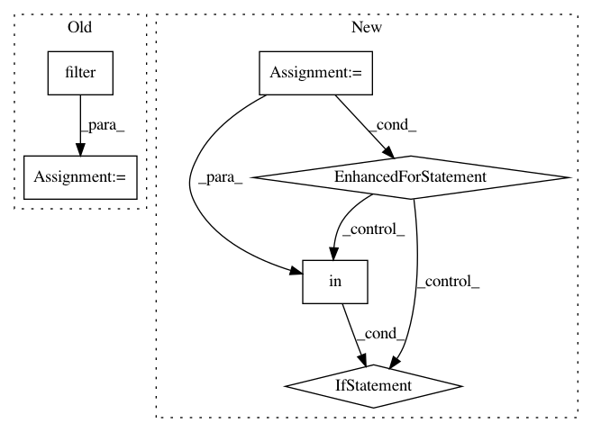

2f74f04253d5a90459401d0f09ea0559d50371a0,util/guess.py,GuessList,check_recall,#GuessList#,87
Before Change
recall = {}
for fold in FOLDS:
fold_questions = questions.filter(lambda q: q.fold == fold).cache()
if fold_questions.len() == 0:
continue
correct = fold_questions.count(lambda q: q.page in guess_lookup[q.qnum])
recall[fold] = {
After Change
wrong = []
print("Computing DAN recall")
for q in questions:
if q.page in guess_lookup[q.qnum]:
correct += 1
else:
wrong.append(q)
total += 1
return correct / total, total, wrong
def guesser_statistics(self, guesser, feature, limit=5000):
In pattern: SUPERPATTERN
Frequency: 3
Non-data size: 6
Instances
Project Name: Pinafore/qb
Commit Name: 2f74f04253d5a90459401d0f09ea0559d50371a0
Time: 2016-06-25
Author: ski.rodriguez@gmail.com
File Name: util/guess.py
Class Name: GuessList
Method Name: check_recall
Project Name: Pinafore/qb
Commit Name: df1dd9b108f3cd7d5130e7f654ea099021c7a2b3
Time: 2017-05-24
Author: ski.rodriguez@gmail.com
File Name: qanta/guesser/experimental/elasticsearch_instance_of.py
Class Name: ElasticSearchIndex
Method Name: search
Project Name: matplotlib/matplotlib
Commit Name: 1cfdb741661c2c9083235f258512c39cecae0da0
Time: 2019-02-06
Author: anntzer.lee@gmail.com
File Name: lib/matplotlib/backends/backend_qt5.py
Class Name: NavigationToolbar2QT
Method Name: edit_parameters